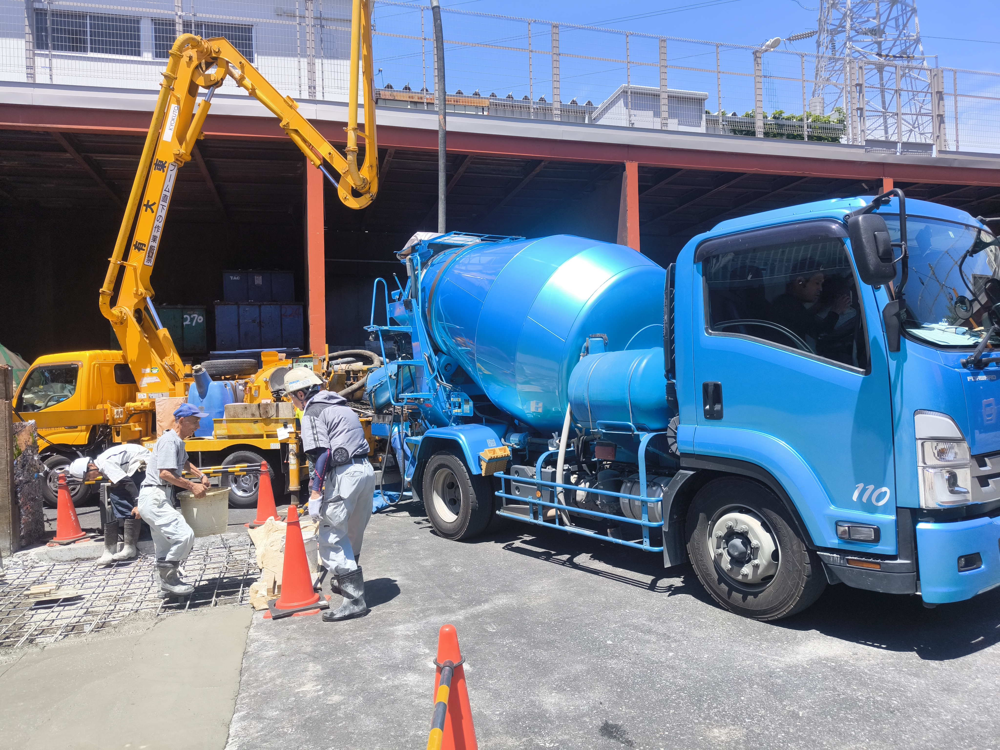
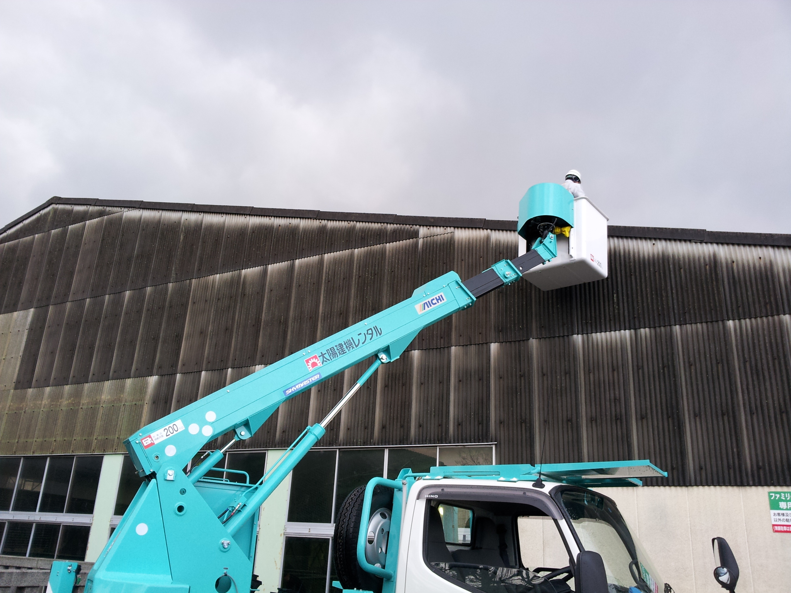

土工事
造成、掘削、盛土、埋戻しなど、建設工事の基盤となる土工事に対応します。

BUILDING THE FUTURE
土工・とび・コンクリート工事
株式会社 太刀川組
ABOUT US
株式会社 太刀川組は、東京都江戸川区を拠点に、土工・とび・コンクリート工事を手がける建設会社です。
昭和55年の創業以来、40年以上。安全と品質を大切に、一つひとつの現場に誠実に向き合ってきました。
OUR BUSINESS
建設現場の基盤から仕上げまで、確かな施工で対応します。
造成、掘削、盛土、埋戻しなど、建設工事の基盤となる土工事に対応します。
足場組立・解体、鉄骨建方、仮設工事など、安全第一で施工します。
基礎、土間、構造物など、各種コンクリート工事に対応します。
既存構造物の補修・改修など、現場の状況に合わせてご相談いただけます。
WHY TACHIKAWAGUMI
昭和55年の創業以来、長年にわたり建設現場に携わってきました。
現場の安全を最優先に、丁寧な施工管理を徹底します。
東京都江戸川区を拠点に、関東一円の現場に対応しています。
WORKS
これまでの主な施工内容をご紹介します。
足場組立・解体、仮設工事など。

掘削、造成、埋戻しなど。

基礎コンクリート、土間工事など。

既存構造物の補修・改修など。
COMPANY
地域社会との信頼関係を大切に、一つひとつの現場に丁寧に取り組んでいます。
| 会社名 | 株式会社 太刀川組 |
|---|---|
| 代表者 | 太刀川 慶一 |
| 設立 | 昭和55年 |
| 事業内容 | とび・土工・コンクリート工事 |
| 対応エリア | 関東一円 |
| 所在地 | 〒132-0001 東京都江戸川区新堀1-33-3 |
CONTACT
工事内容・施工規模・現場のご相談など、お気軽にお問い合わせください。